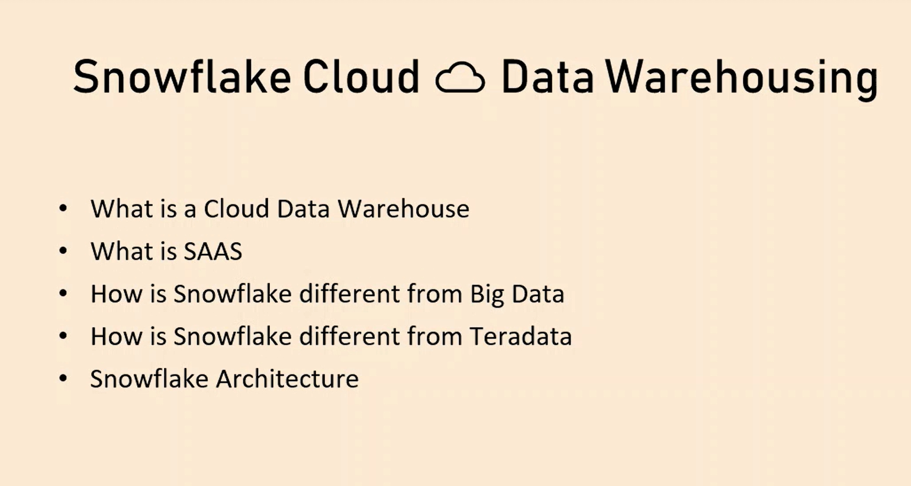
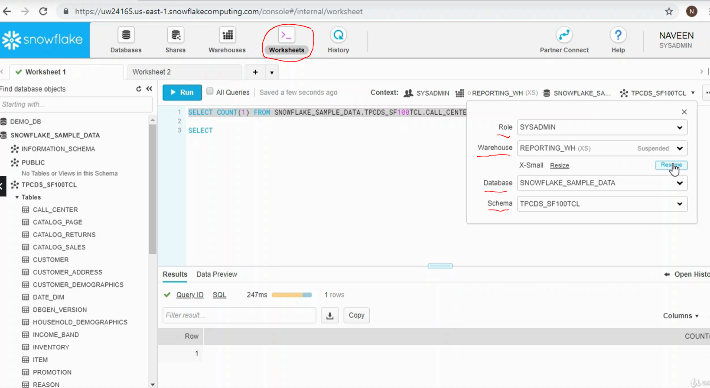
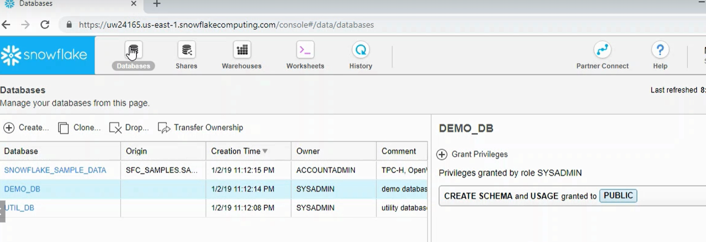
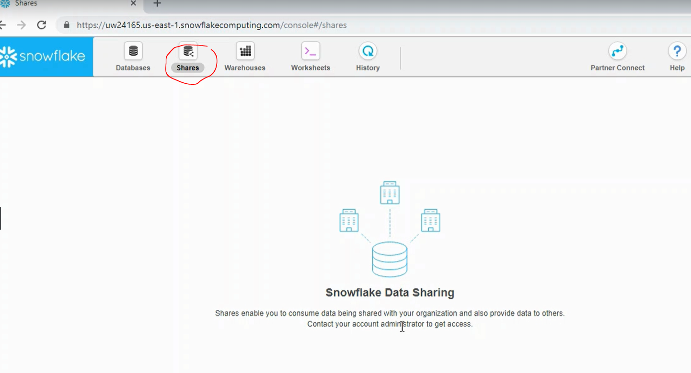
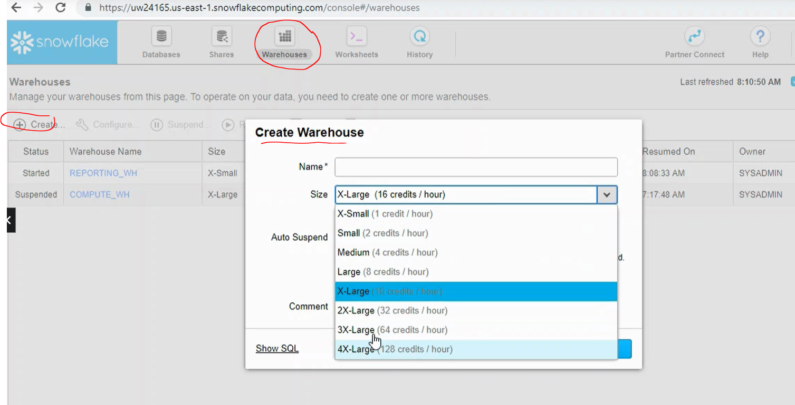
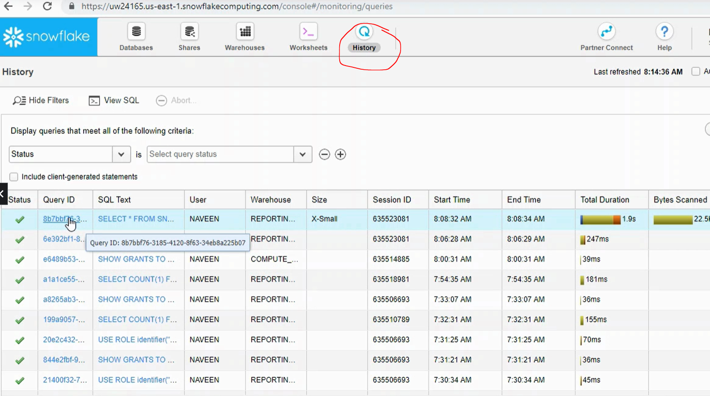
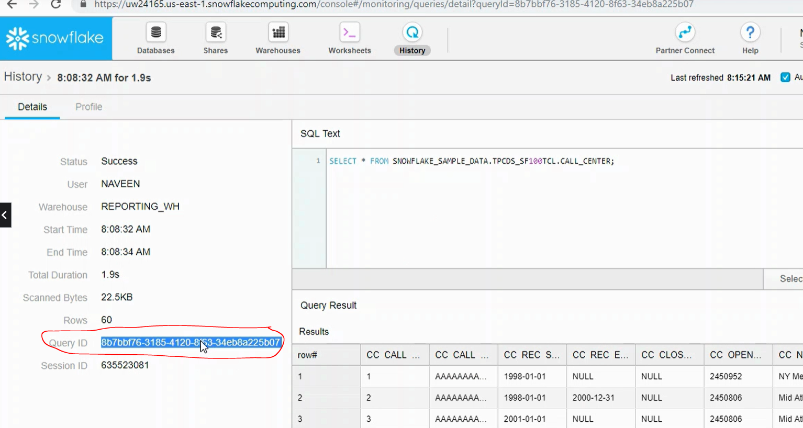
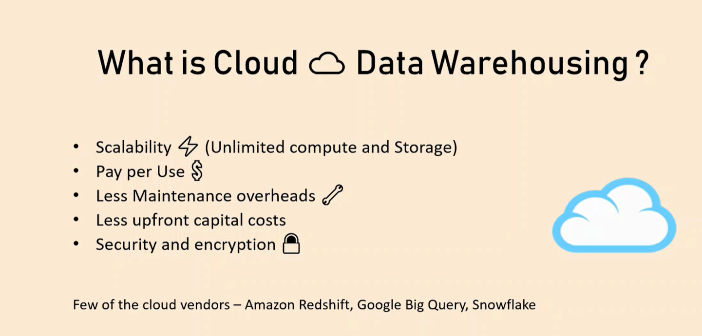
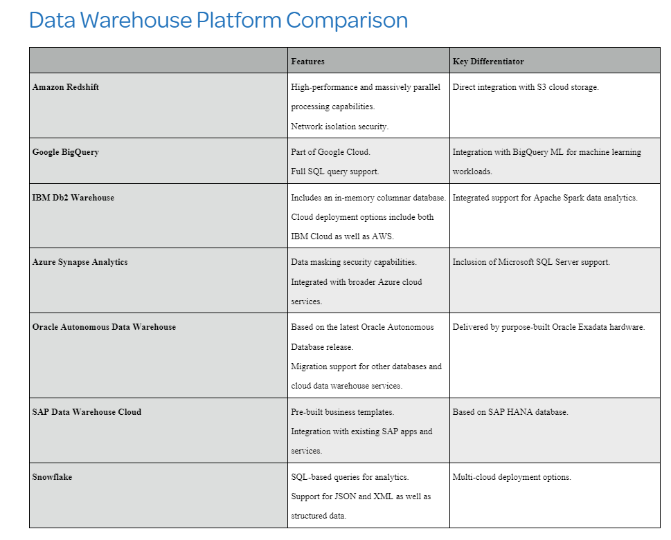
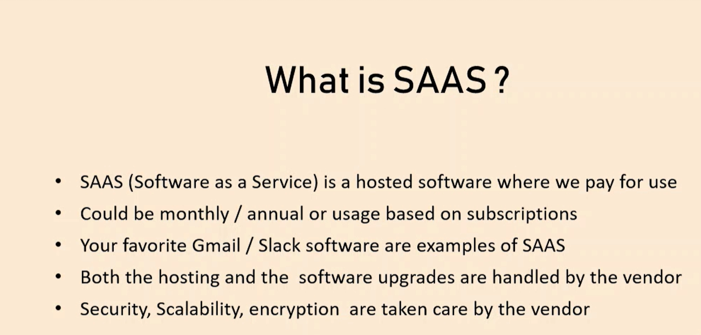

CREATE WAREHOUSE TRAINING_WH
WITH
WAREHOUSE_SIZE = XSMALL
AUTO_SUSPEND = 60
AUTO_RESUME - TRUE
INITIALLY_SUSPENDED = TRUE
STATEMENT_QUEUED_TIMEOUT_IN_SECONDS = 300
STATEMENT_TIMEOUT_IN_SECONDS = 600 ;1 What is Snowflake ?
Snowflake is a cloud-based data warehousing platform that provides a fully managed and scalable solution for storing, processing, and analyzing large amounts of data. It is designed to handle diverse data workloads, ranging from traditional structured data to semi-structured and unstructured data.

Architecture:
Snowflake follows a distributed architecture, separating compute and storage layers. This separation allows for elastic scalability and optimal performance. Snowflake’s architecture is based on clusters of virtual warehouses that can be scaled up or down based on workload requirements.
Cloud-Native:
Snowflake is built specifically for the cloud, leveraging the scalability and flexibility offered by cloud platforms like Amazon Web Services (AWS), Microsoft Azure, and Google Cloud Platform (GCP). It takes advantage of the cloud infrastructure to provide on-demand resources and automatic scaling.
Data Storage:
Snowflake uses a columnar storage format, which provides high compression rates and improves query performance. It can efficiently store and manage large volumes of data, including structured, semi-structured (like JSON and Avro), and unstructured data (like Parquet and CSV).
SQL-Based:
Snowflake supports standard SQL for querying and managing data. It offers a full-fledged SQL engine with support for complex SQL operations, joins, aggregations, and window functions. Snowflake’s SQL dialect is compatible with ANSI SQL, making it familiar and accessible to SQL developers.
Virtual Data Warehouse:
Snowflake introduces the concept of virtual data warehouses (VDWs). A VDW is a compute cluster dedicated to executing queries. It can be dynamically provisioned and scaled based on workload demands, allowing for cost optimization and improved performance.
Zero-Copy Cloning:
Snowflake enables efficient data cloning through a technology called zero-copy cloning. It allows users to create copies of entire datasets or specific subsets instantly without duplicating the underlying data, resulting in significant storage savings.
Data Sharing:
Snowflake offers powerful data sharing capabilities, allowing organizations to securely share data between different Snowflake accounts. This feature simplifies data collaboration and enables real-time data sharing with external partners or clients.
Security and Governance:
Snowflake prioritizes security and provides robust security features such as encryption at rest and in transit, role-based access control (RBAC), multi-factor authentication (MFA), and fine-grained access control. It also supports compliance with various data protection regulations.
Ecosystem Integrations:
Snowflake integrates seamlessly with other popular data tools and services. It has connectors for various data integration platforms, including Apache Kafka, Amazon S3, Azure Data Lake Storage, and more. This allows for seamless data movement and integration with existing data pipelines.
Overall, Snowflake offers a modern, scalable, and efficient data warehousing solution in the cloud, providing organizations with the flexibility to handle large-scale data analytics workloads while simplifying management and reducing infrastructure overhead.
2.1 Snowflake User Interface Walkthrough
Worksheets

Databases

Shares

Warehouses

History


2.2 Understanding the cloud model
In most cases, a cloud data warehouse setup will meet the requirements you held for previous on-premises solutions. The main benefits of a cloud solution vs on-premises data warehousing are listed below :

There are a number of alternative data warehouse providers :
- Amazon Redshift
- Google BigQuery
- IBM Db2 Warehouse
- Azure Synapse Analytics
- Oracle Autonomous Data Warehouse
- SAP Datasphere
A comparison of these particular providers is included below :

One of the features that makes Snowflake unique is its learning resources. The documentation is comprehensive and there is a very helpful and active community.
2.3 Software as a service(SAAS)

2.4 Setting up the environment for the first time
Create a Warehouse :
Note if you are using the Enterprise version of Snowflake there will be a few more configuration options when creating a warehouse, e.g. autoscaling, cluster sizes etc
Create a : Database
CREATE DATABASE SALES_{USERNAME}_DB
DATA_RETENTION_TIME_IN_DAYS = 0
COMMENT = 'Ecommerce sales info' :Create Schema :
create schema Sales_Data;
create schema Sales_Views;
create schema Saled_Stage;Navigate to correct location :
USE WAREHOUSE TRAINING_WH;
USE DATABASE SALES_{USERNAME}_DB;
USE SCHEMA Sales_Data;Verify current location :
select CURRENT_DATABASE(), CURRENT_SCHEMA(), CURRENT_WAREHOUSE();